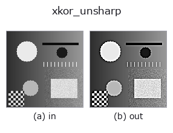

smoothing op• 데이터 종류: image → image
• 호출: fullseye.apply(img, "xkor_unsharp", a=0.5, b=0.5)(2-D 는 이미지 1 장 + 스칼라 노브 2 개 a,b∈[0,1] 모델)
• GPU: 없음(CPU 참조 구현만)

*그림은 128×128 합성 입력에서 실제로 실행한 출력. 왼쪽이 입력, 오른쪽이 출력. 점군은 위에서 본 산점도(밝기 = z), 1-D 열은 꺾은선, 볼륨은 z 방향 최대값 투영, 동영상은 가운데 프레임, 복소 영상은 진폭이며, 그림이 되지 않는 반환값은 값 자체를 표시한다.*
*노브 a 는 출력을 바꾸지 않는다(실측: 0.1 / 0.5 / 0.9에서 동일).*
노브 b 를 훑기(0.1 / 0.5 / 0.9, 다른 노브는 기본값):
▸ xkor_unsharp: 노브 b 스윕 (문서 사이트)
다른 영상에서도(합성 장면 / 사진 / 동전. 윗줄이 입력, 아랫줄이 그 출력. 노브는 기본값):
▸ xkor_unsharp: 다른 입력 이미지 (문서 사이트)
*4열은 컬러 (H,W,3) 입력. 이 op는 채널을 넘나들지 않고 컬러를 다룰 수 있다(색 채널을 세 번째 공간축으로 컨볼루션하지 않음).*
언샤프 마스크(선명화). 시그마에 맞춘 창으로 kornia.filters.unsharp_mask를 호출한다(v + (v - G_σ * v), 강도 1 고정).
a는 미사용, b가 흐림의 시그마(0.5 + 2.0 * b, 범위 0.5〜2.5)를 조절한다. 원본에서 저주파(흐린) 성분을 빼고 강조한 차이를 다시 더하는 고전적인 선명화. 창의 반지름은 int(4σ + 0.5), 가장자리는 끝 화소를 포함해 접어 반사한다(xkor_gaussian과 같음). core의 unsharp와는 노브의 의미가 다르다: core는 a가 강도(1.5a배), b가 σ = 0.5 + 1.5b. core의 unsharp(v, 2/3, (s - 0.5)/1.5)와 이 op의 b = (s - 0.5)/2가 같은 처리다.
★2026-11-03 수정(값이 바뀜): 그 전에는 창이 5x5 고정이라 σ = 1.5(b = 0.5)에서도 반지름 2에서 잘렸다(xkor_gaussian과 같은 결함).
같은 처리의 다른 구현(실측, docs/IMPL_DIFFERENTIAL.md): 같은 입력·같은 a, b에서의 내부 차이(값 범위 대비 비율, 5e-3 미만이면 일치)는 unsharp 0.19. 어긋나는 이유(노브 매핑·창·가장자리·양자화·정의 차이)는 표에 있다.
• gallery2d_smoothing_rank 패밀리 가이드
• 샘플 데이터 카탈로그(DL URL / 라이선스) —— 2-D 는 skimage.data(BSD/public)+ 합성, 3-D 는 실데이터 소스(Stanford/PDS 등)의 DL URL.
• 연산자의 내력·참고문헌 —— 이 연산자 족의 바탕이 된 연구/기법의 출처.
• 알고리즘의 정전(저자·연도)과 용도는 위의 패밀리 사용 가이드에 적혀 있습니다.
아래 프로그램은 실제로 실행됨을 확인했습니다(그림과 같은 입력). Studio 도움말에서는 이 블록이 버튼이 되어 즉시 불러와 실행할 수 있습니다.
xkor_unsharp 0.35 0.50
• gallery2d_smoothing_rank — py -3.11 examples/gallery2d_smoothing_rank.py
image 를 입력으로 받는 것)identity · gaussian · mean_box · mean_box_wh · bilateral · kuwahara · unsharp · median
smoothing)gaussian · mean_box · mean_box_wh · bilateral · kuwahara · unsharp · sk_tv · sk_wavelet
*Provenance: ops.py — 2D 연산자 레지스트리. 이 op 노트는 tools/opdocs.py md 가 자동 생성합니다(직접 편집하지 마세요).*
© 2026 Kazufumi Furuse — Fullseye operator documentation. Licensed under Apache-2.0.